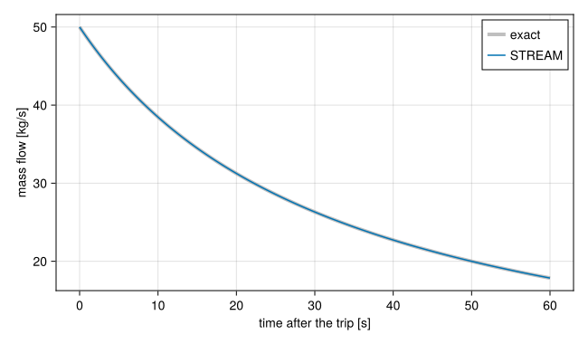
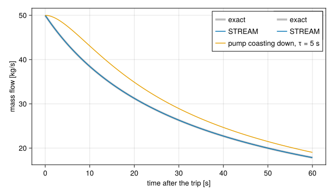

Pump coastdown
Download this tutorial as a Julia script or a Jupyter notebook.
When the pump of a primary cooling system stops, the flow does not stop with it. The water in the pipes has momentum, and many research reactors add a flywheel to the pump so the flow decays slowly enough for the reactor to shut down and natural circulation to take over. This tutorial follows a loop through such a coastdown in time, and checks STREAM against the exact solution, as Python STREAM's PCS coastdown example does.
The loop
Three components stand for the whole primary system: the pump, the inertia of the water and flywheel, and one resistance for all the pipes and the core.
Inertia adds the pressure it takes to accelerate the water, $(L/A)\,d\dot m/dt$, with $L/A$ the length over the area of the pipe it stands for. The resistance is quadratic in the flow, $\Delta p = k\,\dot m^2$, as turbulent friction and form losses are. ResistorFromKnownPoint builds one from a single design point: a pressure drop of 0.3 bar at 50 kg/s.
using STREAMusing STREAM.Components: Pump, Inertia, ResistorFromKnownPoint, HeatExchangerusing STREAM.Assemblies: inseriesusing ModelingToolkit: @named, mtkcompile, unknownsdp0, ṁ0, L_over_A = 3.0e4, 50.0, 2.0e4 # Pa, kg/s, 1/m@named pump = Pump(dp0)@named flywheel = Inertia(L_over_A)@named loss = ResistorFromKnownPoint(; dp=-dp0, ṁ=ṁ0, T=40.0)@named hx = HeatExchanger(40.0)connections = [inseries(pump, flywheel, loss, hx, pump), pump.inlet.p ~ 1.5e5]@named loop = assembly(connections, pump, flywheel, loss, hx)sys = mtkcompile(loop);The heat exchanger holds the water at 40 °C, the temperature the resistance was calibrated at, so its coefficient does not drift with the density.
Before the trip
The four components share one flow, and the compiled system keeps just one copy of it:
foreach(println, unknowns(sys))loss₊inlet₊ṁ(t)A guess has to name that variable. A guess for flywheel.inlet.ṁ, the same flow under another name, would have nothing to act on, since mtkcompile eliminated it. At steady state the pump head balances the loss, and the flow is the design flow:
sol_ss = solve_steady(sys, [sys.loss.inlet.ṁ => 40.0])sol_ss[sys.flywheel.inlet.ṁ]50.00000000000005The trip
At $t = 0$ the pump stops. solve_transient starts from the steady solution, applies the change through overrides, and integrates. The pump's head is a parameter, dP_pump, so stopping it is setting that to zero:
times = range(0.0, 60.0; length=301)sol = solve_transient(sys, sol_ss, times; overrides=[sys.pump.dP_pump => 0.0])sol.retcodeReturnCode.Success = 1With the pump off, only inertia and the loss remain:
\[\frac{L}{A}\,\frac{d\dot m}{dt} = -k\,\dot m^2 \quad\Longrightarrow\quad \dot m(t) = \frac{\dot m_0}{1 + \dot m_0\,\alpha\,t}, \qquad \alpha = \frac{k A}{L}.\]
The flow falls fast at first, while the loss is large, and ever more slowly after: it halves after $1/(\dot m_0 \alpha)$ and takes ten times as long to halve again. With $k = \Delta p_0/\dot m_0^2$:
k = dp0 / ṁ0^2α = k / L_over_Aṁ_exact(t) = ṁ0 / (1 + ṁ0 * α * t)ṁ_sim = sol[sys.flywheel.inlet.ṁ, :]@assert maximum(abs.(ṁ_sim .- ṁ_exact.(sol.t)) ./ ṁ_exact.(sol.t)) < 1e-4maximum(abs.(ṁ_sim .- ṁ_exact.(sol.t)) ./ ṁ_exact.(sol.t))2.4471877922650267e-6The simulation follows the exact solution to the solver's tolerance.
using CairoMakiefig = Figure(size=(650, 380))ax = Axis(fig[1, 1]; xlabel="time after the trip [s]", ylabel="mass flow [kg/s]")lines!(ax, sol.t, ṁ_exact.(sol.t); label="exact", linewidth=4, color=(:gray, 0.5))lines!(ax, sol.t, ṁ_sim; label="STREAM")axislegend(ax)fig
A pump that coasts down by itself
A real pump does not stop at once. Its own rotor and flywheel slow down over seconds, and its head falls with them. A pump whose head is a function of time takes it as its argument instead of a number. Say the head falls exponentially with a time constant of 5 s:
τ = 5.0head(t) = dp0 * exp(-t / τ)@named pump2 = Pump(head)@named flywheel2 = Inertia(L_over_A)@named loss2 = ResistorFromKnownPoint(; dp=-dp0, ṁ=ṁ0, T=40.0)@named hx2 = HeatExchanger(40.0)connections2 = [inseries(pump2, flywheel2, loss2, hx2, pump2), pump2.inlet.p ~ 1.5e5]@named loop2 = assembly(connections2, pump2, flywheel2, loss2, hx2)sys2 = mtkcompile(loop2);The function becomes a parameter of the model, dP_pump_fn, which the operating point gives a value like any other. At $t = 0$ the head is still the full 0.3 bar, so the loop starts at the design flow, the one state the compiled system keeps:
sol2 = solve_transient(sys2, [sys2.loss2.inlet.ṁ => ṁ0, sys2.pump2.dP_pump_fn => head], times)sol2.retcodeReturnCode.Success = 1lines!(ax, sol2.t, sol2[sys2.flywheel2.inlet.ṁ, :]; label="pump coasting down, τ = 5 s")axislegend(ax)fig
The flow now holds up for the first seconds, while the pump still pushes, and falls along the instant-trip curve's shape afterwards, a few seconds later. How much a flywheel buys is exactly this delay, and a loss-of-flow analysis is sensitive to it.
What next
A fuel plate between two channels returns to steady state, and heats the coolant through a fuel plate rather than a fixed wall.